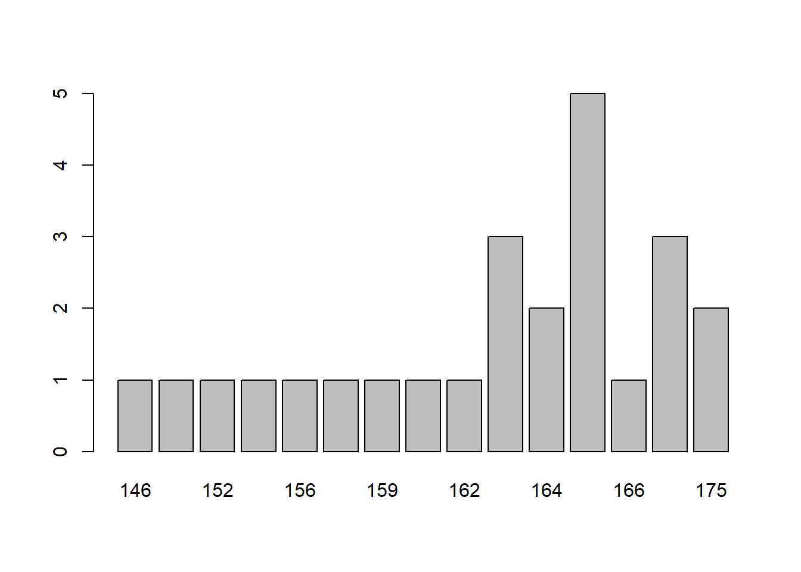
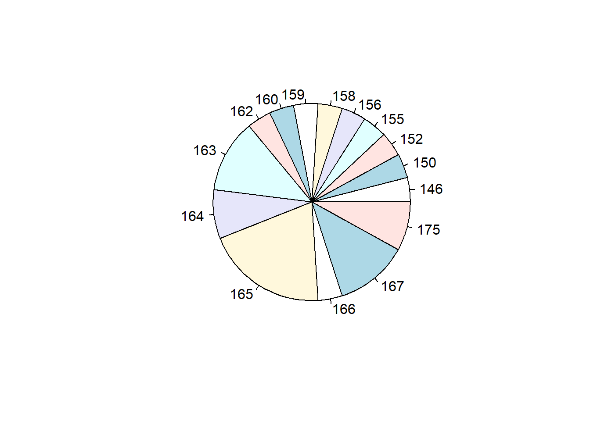
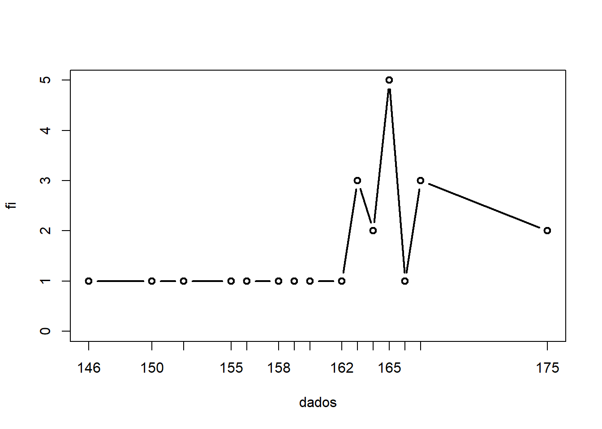
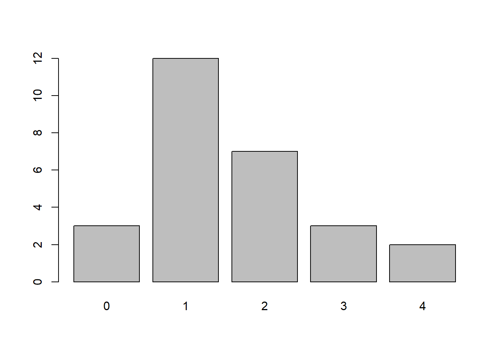

dados <- c(156, 164, 146, 163, 162,
166, 163, 165, 164, 167,
165, 160, 165, 159, 167,
175, 175, 167, 158, 155,
165, 150, 165, 163, 152)c1 ex01
question
Qual o valor das medidas de localização: média, mediana e moda?
keywords
- Média
- Mediana
- Moda a partir de tabela de frequências
more keywords
answer
Etapa 1 à mão. Carregar o conjunto de dados
A expressão é:
[ x = (156+164++163+152) ]
\[ \bar x = \frac{1}{25}(156+164+\cdots+163+152) \]
sendo o resultado (x) com duas casas decimais [ x = 162.28 ]
Etapa 1. Carregar o conjunto de dados
Etapa 2. Calcular a média
# ctrl+alt+I
media <- mean(dados)
media[1] 162.28Etapa 3. Calcular a mediana.
mediana <- median(dados)
mediana[1] 164Etapa 4. Calcular a moda.
moda<-table(dados)
modadados
146 150 152 155 156 158 159 160 162 163 164 165 166 167 175
1 1 1 1 1 1 1 1 1 3 2 5 1 3 2 Outra maneira de fazer:
mean(dados)[1] 162.28median(dados)[1] 164table(dados)dados
146 150 152 155 156 158 159 160 162 163 164 165 166 167 175
1 1 1 1 1 1 1 1 1 3 2 5 1 3 2 E outra maneira:
summary(dados) Min. 1st Qu. Median Mean 3rd Qu. Max.
146.0 159.0 164.0 162.3 165.0 175.0 question
Construir a tabela de frequências dos dados acima e representa graficamente(gráfico de barras de frequência absoluta e relativa, gráfico de linhas, gráfico de setores e o boxplot).
keywords
ssss
answer
A tabela de frequência absoluta é:
A tabela de frequência relativa é:
frequência absoluta acumulada é:
A tabela de frequência relativa acumulda é:
tabela de frequências é:
fi Fi fri Fri
146 1 1 0.04 0.04
150 1 2 0.04 0.08
152 1 3 0.04 0.12
155 1 4 0.04 0.16
156 1 5 0.04 0.20
158 1 6 0.04 0.24
159 1 7 0.04 0.28
160 1 8 0.04 0.32
162 1 9 0.04 0.36
163 3 12 0.12 0.48
164 2 14 0.08 0.56
165 5 19 0.20 0.76
166 1 20 0.04 0.80
167 3 23 0.12 0.92
175 2 25 0.08 1.00o gráfico de barras é:

o gráfico circular é:

o gráfico de linha é:

A expressão é: \[ \sum (y_i-\hat y_i)^2=\sum (y_i-b_0-b_1x_i^2) \]
You can also embed plots, for example:
Note that the echo = FALSE parameter was added to the code chunk to prevent printing of the R code that generated the plot.
question
Nos quatro primeiros dias úteis de uma semana o gerente de uma agência bancária atendeu \(19\), \(15\), \(17\) e \(21\) clientes. No quinto dia útil dessa semana esse gerente atendeu n clientes.Se a média do número diário de clientes atendidos por esse gerente nos cinco dias úteis dessa semana foi \(19\).Calcule a mediana.
keywords
Mediana
answer
Apesar de já saber qual a média, primeiro precisamos saber a quantidade de clientes que foi atendida no quinto dia útil, assim,
\[\bar x_p= \frac{1}{5}(15+17+19+21+x)\] \[19= \frac{1}{5}(15+17+19+21+x)\] \[72+x=95\] \[x=95-72\] \[x=23\] Para encontrar a mediana precisamos colocar os valores em ordem crescente, temos então: \(15\) \(17\) \(19\) \(21\) \(23\), Portanto,a mediana é \(19\) .
question
O quadro seguinte mostra o desempenho de uma equipa de futebol no último campeonato.A coluna da esquerda mostra o número de golos marcados e a coluna da direita informa em quantos jogos a equipa marcou aquele número de golos.
| Golos Marcados | Quantidade de Partidas |
|---|---|
| \(0\) | \(5\) |
| \(1\) | \(3\) |
| \(2\) | \(4\) |
| \(3\) | \(3\) |
| \(4\) | \(2\) |
| \(5\) | \(2\) |
| \(7\) | \(1\) |
| Ano | Empresas Fiscalizadas |
|---|---|
| 1998 | 7.042 |
| 1999 | 6.561 |
| 2000 | 8.585 |
| 2001 | 9.641 |
| 2002 | 8.873 |
| 2003 | 9.367 |
| 2004 | 13.856 |
| 2005 | 12.192 |
| 2006 | 13.326 |
| 2007 | 13.390 |
| 2008 | 10.839 |
| 2009 | 13.379 |
| 2010 | 11.978 |
Fonte:
Se \(\bar x\), \(y\) e \(z\) são, respectivamente, a média, a mediana e a moda desta distribuição, então:
a)\(\bar x\)=\(y\)<\(z\).
b)\(z\)<\(\bar x\)=\(y\).
c)\(y\)<\(z\)<\(\bar x\).
d)\(z\)<\(\bar x\)<\(y\).
e)\(z\)<\(y\)<\(\bar x\).
keywords
ssss
answer
Precisamos calcular a média, a mediana e a moda. Para calcular a média devemos somar o número total de golos e dividir pelo número de partidas.
O número total de golos será encontrado multiplicando-se o número de golos marcados pela quantidade de partidas, ou seja: \[ Total de golos = 0.5+1.3+2.4+3.3+4.2+5.2+7.1 = 45 \] Sendo o total de partidas igual a \(20\), a média de golos será igual a: \[\bar x=M_e=\frac{45}{20}=2.25\]
Para encontrar o valor da moda, vamos verificar a quantidade de golos mais frequente. Neste caso, notamos que em \(5\) partidas não foram feitos nenhum golo.
Depois desse resultado, as partidas que tiveram \(2\) golos foram as mais frequentes (ao todo, \(4\) partidas). Portanto,
\[z = M_o = 0\]
A mediana será encontrada colocando os números de golos em ordem. Como o número de jogos foi igual a \(20\) que é um valor par, temos que calcular a média entre os dois valores centrais, assim temos:
\(0\) \(0\) \(0\) \(0\) \(0\) \(1\) \(1\) \(1\) \(2\) \(2\) \(2\) \(2\) \(3\) \(3\) \(3\) \(4\) \(4\) \(5\) \(5\) \(7\)
\[y=M_d=\frac{2+4}{2}=\frac{4}{2}=2\]
Com esses resultados, sabemos que:
\[\bar x (média) = 2.25\] \[y (mediana) = 2\] \[z (moda) = 0\]
Ou seja,
\(z\)<\(y\)<\(\bar x\)(0<2<2.25)
Alternativa:e)\(z\)<\(y\)<\(\bar x\).
question
No ISCED-Cabinda a disciplina de Estatística, as avaliações são divididas em três categorias: Prova, Trabalho Prático e Participação em Sala de Aula, com pesos respectivos de 5, 3 e 2. Um estudante obteve as seguintes notas:Prova:12,5;Trabalho Prático: 12; Participação em Sala de Aula:9,5. Calcule a média do estudante nessa disciplina.
keywords
Como cada nota possui um peso, trata-se de uma média ponderada. A média ponderada é um tipo de média que leva em consideração a importância de cada valor ao calcular a média geral. Atribuindo um peso a cada valor, que indica sua importância relativa.
answer
A média ponderada é calculada usando a forma: \[ \bar x_p=\frac{Σ(w_ix_i)}{Σ(w_i)} \] Onde:
\(w_i\) é o peso associado ao valor \(x_i\);
\(x_i\) é o valor;
\(Σ\) é o símbolo que representa a soma.
Calculando a média ponderada
\[ \bar x_p=\frac{Σ(w_ix_i)}{Σ(w_i)} \] \[ =\frac{(5.12,5+3.12+2.9,5)}{(5+3+2)} \] \[ =\frac{(62,5+36+19)}{10} \] \[ =\frac{(117,5)}{10}=11,75 \]
A média do estudante é: 11,75
[1] "Média ponderada: 11.75"question
A lista do número de irmãos dos alunos do 1º ano do curso de Matemática do ISCED-Cabinda é a seguinte:
\(1\) \(0\) \(1\) \(2\) \(1\) \(1\) \(1\) \(3\) \(0\) \(4\) \(0\) \(1\) \(1\)
\(4\) \(2\) \(2\) \(1\) \(3\) \(1\) \(2\) \(1\) \(1\) \(2\) \(1\) \(2\) \(3\)
Construa :
A tabela de frequências.
O diagrama de barras.
keywords
ssss
answer
A tabela de frequência absoluta é:
d1
0 1 2 3 4
3 12 7 3 2 A tabela de frequência relativa é:
d1
0 1 2 3 4
0.11111111 0.44444444 0.25925926 0.11111111 0.07407407 tabela de frequências é:
| fi | fri | |
|---|---|---|
| 0 | 3 | 0.1111111 |
| 1 | 12 | 0.4444444 |
| 2 | 7 | 0.2592593 |
| 3 | 3 | 0.1111111 |
| 4 | 2 | 0.0740741 |
o gráfico de barras é:
